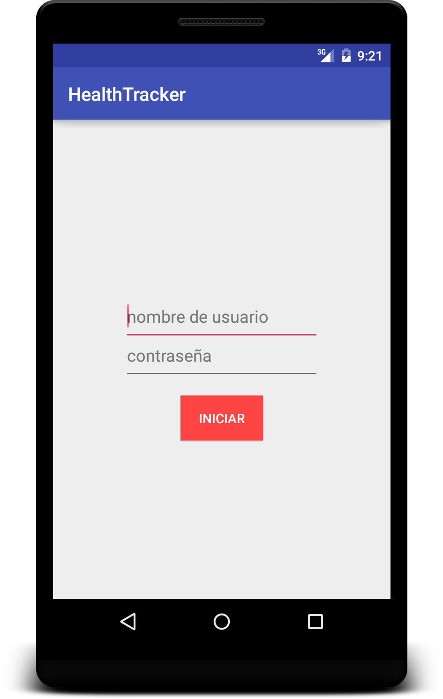
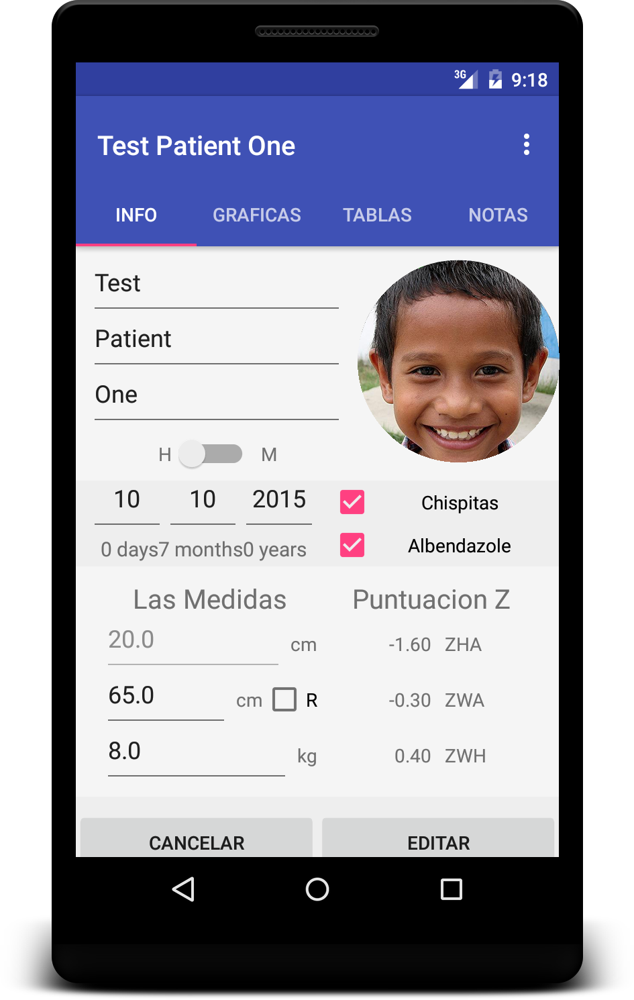
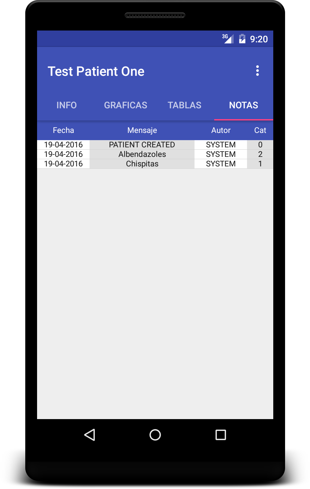

This project began after I was contacted by a researcher at Emory to develop an Android application for Wuqu' Kawoq, a Guatemalan organization aiming to improve the quality of life for native Mayan communities. With the goal of digitizing and optimizing the current paper system in place, the app had to be able to provide a way to track the growth of child patients, and alert healthcare workers should the need arise.
The login screen
The app tracks the growth of children via their z-scores, plotting their growth curves visually against the population averages. Using this data, the app is able to notify health workers about worrying trends, and whether a child might be malnutritioned. By both storing and analyzing data, the app aims to replace the current paper cataloging methods in use, as well as provide focused communication between medical staff throughout Guatemala. Using SQLite3, the application is able to quickly record new patients, search for patients with multiple specifications, and efficiently upload to existing online databases (though the planned online format is to be OpenMRS).
The patient view page - via the fragments in the Activity one can swipe to view graphs, growth history tables, and notes
The notes fragment - entries are stored in an SQLite3 database
What's Next
The Wuqu' Kawoq app is still a work in progress - its fate rests on demand, though much of its features are complete. If the project is greenlit, I hope to implement online functionality with OpenMRS (currently the app is entirely offline), a messaging system, and a geographical patient map. Stay tuned for more updates! Alternatively, you can view the project on github here